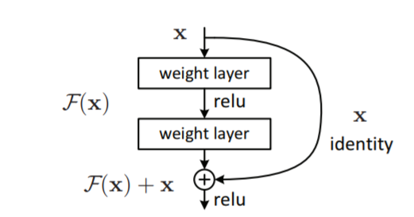
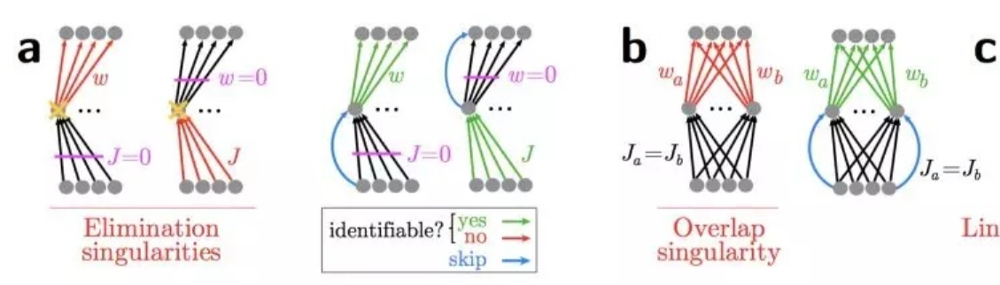

对skip connect 和Identity Mapping的理解

如上图所示就是论文中的resnet网络的skip block的示意图。我们可以使用一个非线性变化函数来描述一个网络的输入输出，即输入为X，输出为F（x），F通常包括了卷积，激活等操作。
当我们强行将一个输入添加到函数的输出的时候，虽然我们仍然可以用G（x）来描述输入输出的关系，但是这个G（x）却可以明确的拆分为F（x）和X的线性叠加。这就是skip connect的思想，将输出表述为输入和输入的一个非线性变换的线性叠加，没用新的公式，没有新的理论，只是换了一种新的表达。它解决了深层网络的训练问题
1、为什么使用skip connect
在深度学习中，网络越深表达能力越强，性能越好。但随着网络深度的加深，一些其他的问题也会产生，比如梯度消失，梯度爆炸，解决这些问题也有一些方法，比如BN层，Relu等各种激活函数，这些方法的改善能力有限。
关于梯度问题
深度学习依靠误差的链式反向传播来进行参数更新，假如我们有这样一个函数
$$
\begin{array}{c}{f^{\prime}=f\left(\boldsymbol{x}, \boldsymbol{w}_{\boldsymbol{f}}\right)} \\ {g^{\prime}=g\left(f^{\prime}\right)} \\ {y^{\prime}=k\left(g^{\prime}\right)} \\ {\text {cost}=\text {criterion}\left(y, y^{\prime}\right)}\end{array}
$$
假设f为卷积层，g为激活层，k为分类层，则cost对f的导数为：
$$
\frac{d\left(f^{\prime}\right)}{d\left(\boldsymbol{w}_{f}\right)} \times \frac{d\left(g^{\prime}\right)}{d\left(f^{\prime}\right)} \times \frac{d\left(y^{\prime}\right)}{d\left(g^{\prime}\right)} \times \frac{d(\cos t)}{y^{\prime}}
$$
其存在的问题也很明显了，一旦其中某一个导数很小，多次连乘后梯度可能越来越小，这就是常说的梯度消散，对于深层网络，传到浅层几乎就没了。但是如果使用了残差，每一个导数就加上了一个恒等项目1
$$
\frac{dh}{dx}=\frac{d\left(f+x\right)}{dx}=\frac{df}{dx}+1
$$
此时就算原来的导数df/dx很小，这时候误差仍然能够有效的反向传播，这就是核心思想。
模型退化
神经网络的退化才是难以训练深层网络根本原因所在，而不是梯度消散。虽然梯度范数大，但是如果网络的可用自由度对这些范数的贡献非常不均衡，也就是每个层中只有少量的隐藏单元对不同的输入改变它们的激活值，而大部分隐藏单元对不同的输入都是相同的反应，此时整个权重矩阵的秩不高。并且随着网络层数的增加，连乘后使得整个秩变的更低。
这也是我们常说的网络退化问题，虽然是一个很高维的矩阵，但是大部分维度却没有信息，表达能力没有看起来那么强大。
残差连接强制打破了网络的对称性

第1种（图a），输入权重矩阵(灰色部分)完全退化为0，则输出W已经失去鉴别能力，此时加上残差连接(蓝色部分)，网络又恢复了表达能力。第2种(图b),输入对称的权重矩阵，那输出W一样不具备这两部分的鉴别能力，添加残差连接(蓝色部分)可打破对称性。
2、Identity Mapping是什么
这个概念出自论文Identity Mapping in Deep Residual Networks这篇论文也主要分析的是resnet中使用identity mappingx效果好的原因。
上图为resnet的结构，shortcut结构为右边链路，可以用h(x)表示，则上图的h(x)=x,这是一个恒等映射。h表示shortcut使用什么形式的变换,作者提出了一个更通用的表达式。作者提出的改进为让$f(y_{l})$直接为$y_{l}$即去掉relu层
$$
\begin{aligned} \mathbf{y}_{l}=& h\left(\mathbf{x}_{l}\right)+\mathcal{F}\left(\mathbf{x}_{l}, \mathcal{W}_{l}\right) \\ & \mathbf{x}_{l+1}=f\left(\mathbf{y}_{l}\right) \end{aligned}
$$
而Identity mapping 其实就是h(x)=x，作者提出的改进为让$f(y_{l})$直接为$y_{l}$即去掉relu层。这样子相当于传向下一层的也是一个identity mapping。
分析shortcut 取其他非 Identity map 的变换时结果不好的原因，取线性映射为例$h(x)=k x$
$$
\mathbf{x}_{l+1}=\lambda_{l} \mathbf{x}_{l}+\mathcal{F}\left(\mathbf{x}_{l}, \mathcal{W}_{l}\right)
$$
则第L层可以表示为
$$
\mathbf{x}_{L}=\left(\prod_{i=l}^{L-1} \lambda_{i}\right) \mathbf{x}_{l}+\sum_{i=l}^{L-1} \hat{\mathcal{F}}\left(\mathbf{x}_{i}, \mathcal{W}_{i}\right)
$$
进行反向传播时求导为
$$
\frac{\partial \mathcal{E}}{\partial \mathbf{x}_{l}}=\frac{\partial \mathcal{E}}{\partial \mathbf{x}_{L}}\left(\left(\prod_{i=l}^{L-1} \lambda_{i}\right)+\frac{\partial}{\partial \mathbf{x}_{l}} \sum_{i=l}^{L-1} \hat{\mathcal{F}}\left(\mathbf{x}_{i}, \mathcal{W}_{i}\right)\right)
$$
此网络的后向传播过程受$\lambda$控制，若$\lambda$>1，则第一项会非常大，因而会导致梯度爆炸；若$\lambda$<1，则第一项会非常小，甚至消失。反向传播的信号只能从第二项传递，但是其优化难度更大。综上，这个结构妨碍了信息的传播，恒等映射更好。
更深入的理解可以看论文：
Deep Residual Learning for Image Recognition
Skip Connections Eliminate Singularities
Understanding and Improving Convolutional Neural Networks via Concatenated Rectified Linear Units
Highway and Residual Networks learn Unrolled Iterative Estimation